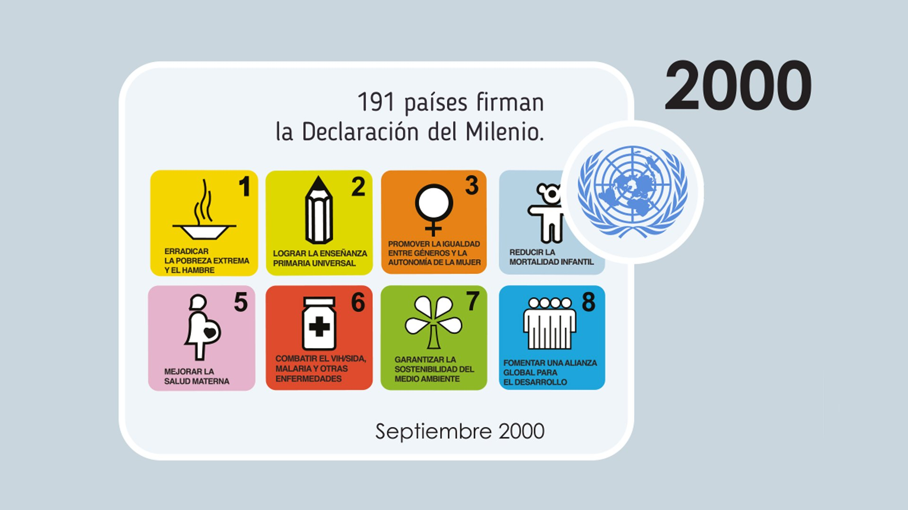

Capitulo 5
La Declaración del Milenio
¿Que es la declaracion del Milenio?
La Declaración del Milenio es una confirmación del compromiso que han asumido las naciones firmantes para continuar considerando los postulados de la Agenda 21. Fue aprobada en la Cumbre del Milenio celebrada entre el 6 y el 8 de septiembre de 2000, con la participación de 191 países. En ella se discutieron los retos que enfrenta el mundo y se establecieron objetivos concretos:
Objetivos:
- Erradicar la pobreza extrema y el hambre.
- Lograr la enseñanza primaria universal.
- Promover la igualdad entre géneros y la autonomía de la mujer.
- Reducir la mortalidad infantil.
- Mejorar la salud materna.
- Combatir el VIH/SIDA, el paludismo y otras enfermedades.
- Garantizar la sostenibilidad del medio ambiente.
- Fomentar una asociación mundial para el desarrollo.
Indicadores sobresalientes
- Objetivo 1: Erradicar la pobreza extrema y el hambre.
- Objetivo 2: Lograr la enseñanza primaria universal.
Meta: Alcanzar para el año 2015 el acceso a la educación primaria completa. - Objetivo 3: Promover la igualdad entre los géneros y la autonomía de la mujer.
Meta: Eliminar las desigualdades entre géneros en la enseñanza primaria y secundaria para el año 2005, y en todos los niveles de enseñanza para el 2015.